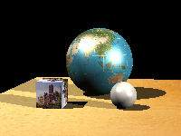

Ray Tracing Engine
Project information
In my computer graphics class, we built a ray tracing engine in Python from scratch. By the end of our four weeks of classes, it was able to ray trace 3D objects, scenes, and meshes of varying complexity, and we included features such as reflections, adjustable lighting, shading, texture mapping, and a moveable camera.
For our final project, I teamed up with a classmate, and we set to improve the base engine:
- We improved its efficiency, making it 100 times faster, by using bounding boxes and bounding volume hierarchy.
- We tweaked our engine so that it could produce red-blue anaglyphs of any set of pictures, suitable for viewing with 3D glasses.
- At the end, we created a short animation of a camera rotating 360° around the center of a scene, to showcase the red-blue anaglyph feature.
